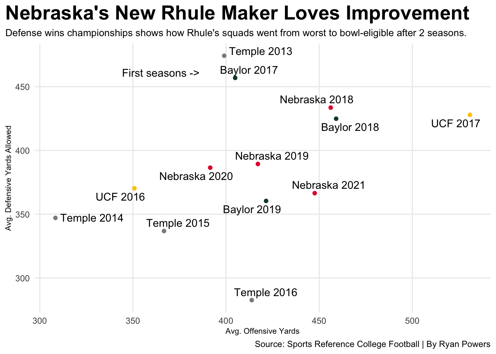
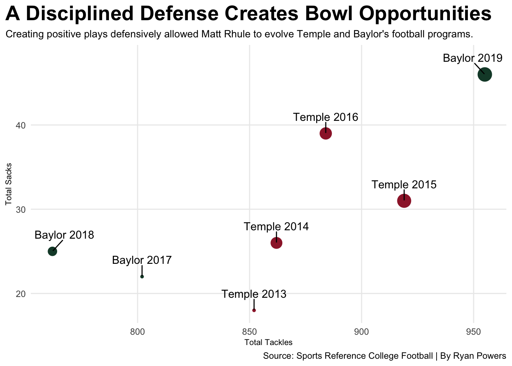

Nebraska’s New Rhuler Has An Intriguing History Surrounding Winning
careerrecords
averageyards
defensivedominance
Author
Ryan Powers
Published
April 12, 2023
After years of disappointment and no bowl games to look forward to, the Cornhuskers are marking a new chapter, hiring former Carolina Panthers head coach Matt Rhule. Rhule is returning to college football where he made a name for himself to begin with. He began his head coaching career with Temple and Baylor University. The former NFL coach is replacing Scott Frost, whose 5-year tenure with Huskers did not end as many fans would have hoped.
Moving on from Frost was recognized as a huge win by Husker fans but there is an interesting story to tell between the team’s new hire and their former coach. They have both coached 7 years in college football, Frost has coached a few less games due to his departure this past season, and their career win percentages are within reach of one another. Rhule arrives at the University of Nebraska-Lincoln with a win percentage of 0.552% and Frost left with a 0.479% only separating the two by 0.043%.
Do the two have similar season histories when it comes to winning? Are the Cornhuskers digging a deeper hole than the one already existing? Well, not exactly. During Frost’s first season at the University of Central Florida, he achieved an average season of 6-7. After, he achieved the notorious 13-0 undefeated season resulting in a Peach Bowl win. While Husker football fans went crazy after the hiring of Frost in 2018, little did they know he would never achieve another season over 0.500, let alone win more than 5 games. Coach Rhule displays a different pattern than Frost off the bat with the experience he has gained since 2013. To dive deeper, it seems it takes 2 years before his respective programs began winning.
What is Rhule doing to help his team succeed after those 2 seasons? Those 2 programs did not go from worst to bowl-eligible overnight. The saying goes “defense wins championships” and it carries into this situation. In his first year with Temple and Baylor, Rhule’s defenses gave up an average of over 450 yards per game while the offense was gaining relatively 400 yards per game. Following that first season, his team noticeably improved defensively and went back-and-forth offensively. During the team’s best seasons, 2016 and 2019, they recorded the lowest average for defensive yards per game allowed.
On the other hand, Frost displayed an incredible offensive refinement from 2016-2017, arrived in Nebraska and did not progress or regress in 5 seasons. Even surrounding Rhule’s Baylor teams, the question still lies how Frost did not win more than 5 games at least once.
Code
filterrhuleavg <- rhuleavg %>%filter(Split !="Difference") %>%select(season, Split, Yds) %>%pivot_wider(names_from = Split, values_from = Yds) %>%mutate(SchoolColor =case_when( season <=2016~"Temple", season >=2017~"Baylor" ),TeamSeason =paste(SchoolColor, season) )filterfrostavg <- frostavg %>%filter(Split !="Difference") %>%select(season, Split, Yds) %>%pivot_wider(names_from = Split, values_from = Yds) %>%mutate(SchoolColor =case_when( season <=2017~"UCF", season >=2018~"Nebraska" ),TeamSeason =paste(SchoolColor, season))coaches <-bind_rows(filterfrostavg, filterrhuleavg)ggplot() +geom_point(data=filterrhuleavg, aes(x=Offense, y=Defense, color=SchoolColor)) +geom_point(data=filterfrostavg, aes(x=Offense, y=Defense, color=SchoolColor)) +geom_text(aes(x=365, y=461, label="First seasons ->")) +scale_color_manual(values=c("#154734", "#E41C38", "#8A8D8F", "#FFC904")) +geom_text_repel(data=coaches,aes(x=Offense, y=Defense, label=TeamSeason)) +labs(x="Avg. Offensive Yards",y="Avg. Defensive Yards Allowed",title="Nebraska's New Rhule Maker Loves Improvement",subtitle="Defense wins championships shows how Rhule's squads went from worst to bowl-eligible after 2 seasons.",caption="Source: Sports Reference College Football | By Ryan Powers" ) +theme_minimal() +theme(legend.position ="none",plot.title =element_text(size =20, face ="bold"),axis.title =element_text(size =8),plot.subtitle =element_text(size=10),panel.grid.minor =element_blank(),plot.title.position ="plot" )

Coach Rhule improved his defense the good ol’ fashioned way during his time at Temple and Baylor. Tackling better and attacking the quarterback was all he needed to develop top tier Division I football programs. The more he attacked the quarterback, the more opportunities for the secondary to pick off the football. On the next chart, the bigger the bubble means more interceptions during that season. Being one of the worst defenses in football this past season, the Blackshirts have a lot to improve on to make opportunities for their offense.
Code
newrhuledefense <- rhuledefense %>%select(season, school, teamseason, Tot, Sk, Int)rhuleseasontotals <- newrhuledefense %>%group_by(season, school, teamseason) %>%summarise(totaltackles =sum(Tot),totalsacks =sum(Sk),totalinterceptions =sum(Int, na.rm=TRUE) )ggplot() +geom_point(data=rhuleseasontotals,aes(x=totaltackles, y=totalsacks, size=totalinterceptions, color=school)) +scale_color_manual(values=c("#154734", "#9D2235")) +geom_text_repel(data=rhuleseasontotals,aes(x=totaltackles, y=totalsacks, label=teamseason),nudge_y =2 ) +labs(x="Total Tackles",y="Total Sacks",title="A Disciplined Defense Creates Bowl Opportunities",subtitle="Creating positive plays defensively allowed Matt Rhule to evolve Temple and Baylor's football programs.",caption="Source: Sports Reference College Football | By Ryan Powers" ) +theme_minimal() +theme(legend.position ="none",plot.title =element_text(size =20, face ="bold"),axis.title =element_text(size =8),plot.subtitle =element_text(size=10),panel.grid.minor =element_blank(),plot.title.position ="plot" )

Nebraska football fans have a lot to look forward to this season. Coach Rhule brings a winning culture and experienced staff to a suffering Cornhusker fanbase. Unfortunately, Husker fans may have to wait 2 years before witnessing greatness in Memorial Stadium.